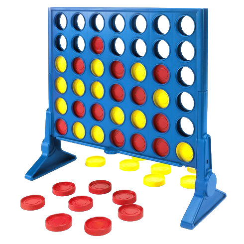

The classic game of Connect 4 has been recreated in the Java Console!

Connect Four was introduced in 1974 and became an instant classic, stealing the hearts of children worldwide.
Two players take turns dropping pieces of their respective colour into the grid, trying to get four of their colour in a row either vertically, horizontally, or diagonally.
In this edition, player one's pieces are represented as , and player two's pieces are represented as .
You can play by yourself against the computer, or you can find a friend and play together!